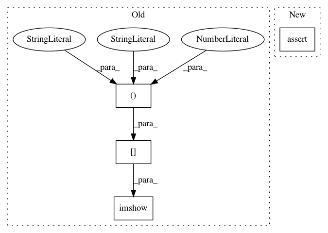

7c239dedae4a7b472dc4574f7752a0a65ca643ef,dipy/denoise/tests/test_nlmeans.py,,test_nlmeans_random_noise,#,43
Before Change
print(S0n.shape)
figure(1)
imshow(S0[:,:,25], interpolation="nearest")
figure(2)
imshow(S0n[:,:,25], interpolation="nearest")
After Change
print(S0n.mean(), S0n.min(), S0n.max())
assert_(S0n.min() > S0.min)
assert_(S0n.max() > S0.max)
assert_(np.abs(S0n.mean() - 100) < np.abs(S0.mean() - 100))
// def test_nlmeans_random_noise():
In pattern: SUPERPATTERN
Frequency: 3
Non-data size: 4
Instances
Project Name: nipy/dipy
Commit Name: 7c239dedae4a7b472dc4574f7752a0a65ca643ef
Time: 2014-01-23
Author: garyfallidis@gmail.com
File Name: dipy/denoise/tests/test_nlmeans.py
Class Name:
Method Name: test_nlmeans_random_noise
Project Name: nipy/dipy
Commit Name: 3dc43bc264ba17005f40eafcef8f1aae6ae1519e
Time: 2014-12-17
Author: garyfallidis@gmail.com
File Name: dipy/align/tests/test_reslice.py
Class Name:
Method Name: test_resample
Project Name: nipy/dipy
Commit Name: 7c239dedae4a7b472dc4574f7752a0a65ca643ef
Time: 2014-01-23
Author: garyfallidis@gmail.com
File Name: dipy/denoise/tests/test_nlmeans.py
Class Name:
Method Name: test_nlmeans_static